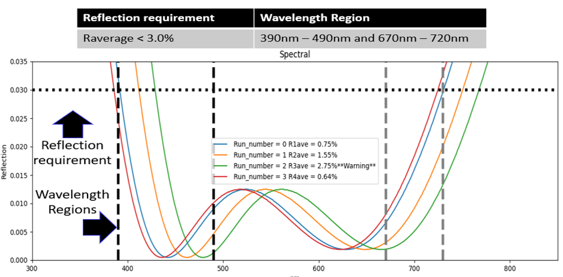
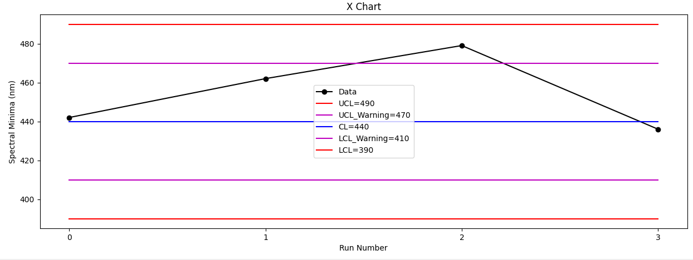
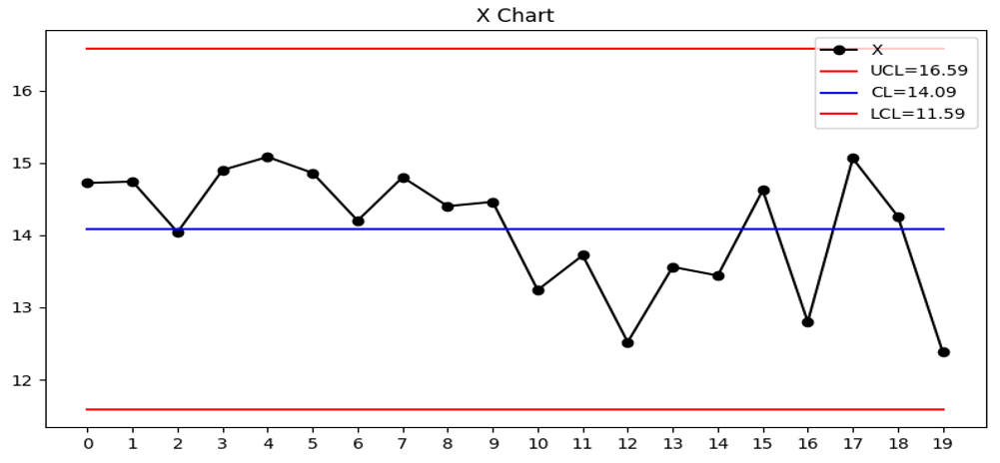
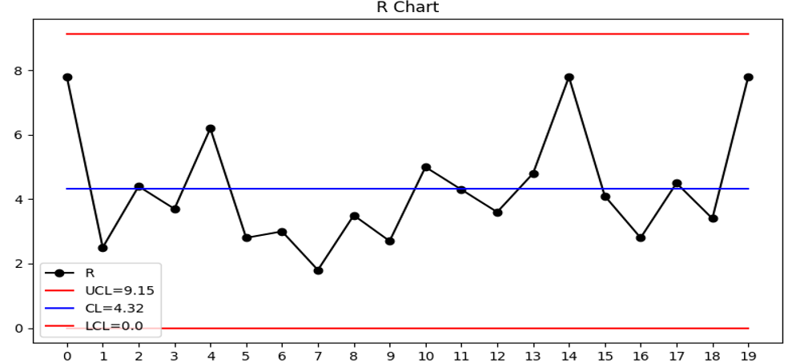
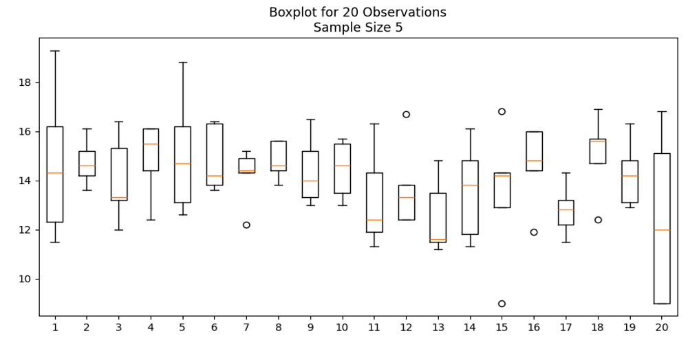

SPC Program Leadership
Developed department SPC plans, established implementation structure, coordinated engineering participation, and supported adoption across manufacturing.
Process Engineering
Applied SPC for process monitoring, tool ownership, troubleshooting, variation analysis, and Root Cause and Corrective Action (RCCA).
MES & Operational Integration
Served as an SPC subject-matter expert supporting MES configuration, data structures, training, monitoring, and manufacturing review processes.
SPC Implementation & Department Leadership
My SPC experience extends beyond creating control charts. I have helped establish the structure required for manufacturing organizations to use SPC consistently as an engineering and operational decision-making tool.
- Developed the department SPC implementation plan.
- Defined how engineers should establish, maintain, and review SPC monitoring.
- Worked directly with engineers to identify process data and create SPC monitoring.
- Served as the SPC SME during MES implementation.
- Led MES training related to SPC functionality and use.
- Established recurring biweekly SPC review meetings with engineering teams.
- Supported development of SPC training and standardized engineering practices.
- Helped transition SPC from individual engineering activity into a structured department capability.
SPC Methods & Implementation Approaches
Depending on the manufacturing environment and available systems, SPC can be implemented through multiple approaches.
- MES-integrated SPC monitoring
- Excel-based SPC analysis
- Automated data analysis
- Manual engineering review where appropriate
- X-bar and Range control charts
- Western Electric (WECO) rule evaluation
- Warning and control limits
- Process variation monitoring
- Trend analysis
- Automated notifications and engineering review workflows
SPC for Spectral Monitoring — Optics

- Monitors spectral performance across manufacturing runs.
- Compares process results against defined wavelength regions and performance limits.
- Identifies warning conditions and out-of-limit results requiring engineering review.
Example shown using representative optical coating monitoring data.
Process Trend Monitoring

- Tracks changes in process behavior across manufacturing runs.
- Enables monitoring of derived process metrics rather than individual measurements alone.
- Supports early identification of process drift before product requirements are exceeded.
Automated Engineering Alerts

- Generates alerts when defined warning or control conditions occur.
- Provides engineers with the relevant process or run information for investigation.
- Supports faster response to emerging manufacturing variation.
SPC for Thickness Monitoring — Semiconductor Manufacturing

- Uses multiple measurement locations to evaluate process performance.
- Tracks average process behavior across manufacturing samples.
- Establishes control limits based on process variation.
Range & Within-Sample Variation

- Tracks measurement range to identify changes in within-sample process variation.
- Provides a complementary view to average process performance.
Distribution & Variation Analysis

- Visualizes measurement distributions across manufacturing samples.
- Helps engineers distinguish changes in process center from changes in variation.
- Supports deeper investigation of manufacturing process behavior.
Connecting SPC to Manufacturing Operations
Effective SPC requires more than generating charts. It requires process ownership, appropriate data, engineering review, defined reaction plans, training, and integration into normal manufacturing operations.
- Engineering ownership and recurring review
- MES-based process monitoring
- Manufacturing dashboards and visibility
- Standardized reaction to warning and control conditions
- Training and adoption across engineering teams
- Use of SPC during process troubleshooting and RCCA